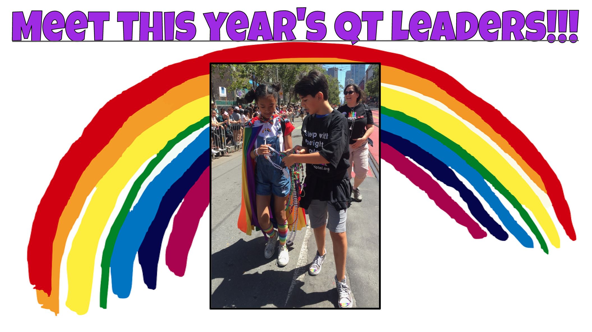
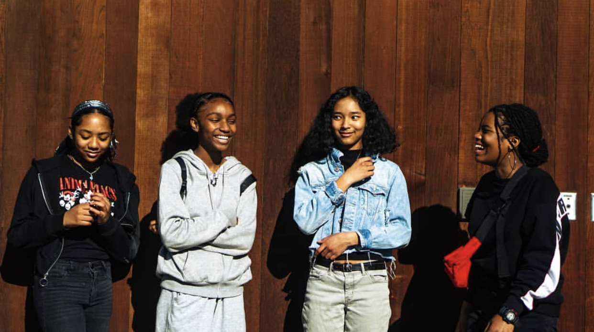

I've been running the Queer & Trans Club throughout high school and was a part of an organization for young Black girls earlier on in which we planned a Black Girls March! Was on the Board of Students of Color as well and have always been surrounded by incredible young activists. Here are some cool educational slideshows yee!


QT Club Slides || QT Club Slides 2 || QT Club Slides Cont.
Video Game Diversity & Representation
HSEP Tiny Homes AutoCad Project